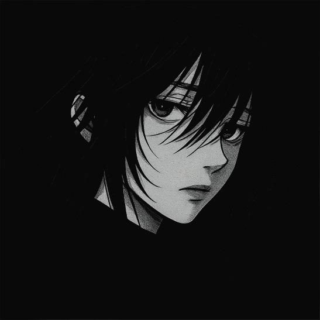

♛UNKNOWN ENTITY / 0403

~~𓆩 𝖚𝖓𝖐𝖓𝖔𝖜𝖓 𓆪~~
ᴜɴᴋɴᴏᴡɴ_𝟺ᴏ𝟹 ✦
he / him ✶
A QUIET SOUL WITH A DARKER SIDE.
CALM MIND, COLD AURA, SOFT HEART.
NOT DISTANT. JUST SELECTIVE.
LOST IN GAMES, ANIME & MY OWN WORLD.
「彼は自分の世界で静かに生きている。」
∞THOUGHTS
01INNER CIRCLE
404AVAILABLE?